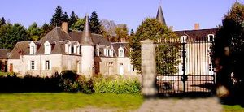
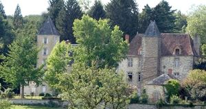
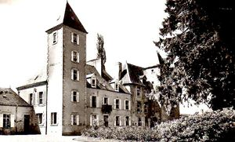
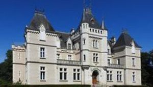
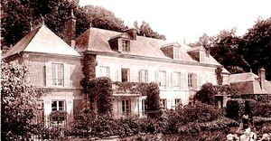

Recensement Jean-Claude Truffet
| Département | 23 — Creuse |
| Canton | Bonnat |
| Commune | Lourdouaix Sain-Pierre |
| Type d'édifice | Château |
| Période d'origine | XIV |





LOURDOUEIX, le premier seigneur connu est Podard de Vincent qui fit en 1405 une donation à l'abbaye d'Aubpierre sur sa terre de Lourdoueix et qui lui accorda de plus les dixmes, terrage et charriage sur Chatellus et Pédeon. Dès 1515, cette terre appartenait à la famille de Saint-Maur, qui la posséda plus de deux siècles. François de Saint-Maur, sieur de Lourdoueix, épousa Gilberte de Châlus; Marie-Sylvie de Saint-Maur, dame de Lourdoueix, épousa en 1654 Etienne du Breuil et lui porta la seigneurie de Lourdoueix. ils laissèrent Marie-Sylvie, Robert de Saint-Maur, écuyer, sieur de Lourdoueix-Saint-Pierre et de Verne, épousa le 2 décembre 1676 Léonarde de La Marche. Leur fils, Joseph du Breuil, seigneur de Lourdoueix, né en 1656, gendarme de la garde du roi, épousa en 1694 Anne André. Ils laissèrent: 1° François du Breuil, seigneur de Lourdoueix et la Béraudière, qui épousa en 1733 Marie-Raymond de Lussat; 2° Georges du Breuil, qui était curé de Lourdoueix en 1733. En 1750, M. de Chauvelin était seigneur en partie de Lourdoueix, et M. Blondel en 1780.
VOST, cet ancien fief fortifié dont l'origine remonte à 1236, se présente sous la forme d'un plan carré, cerné de doubles douves. L'accès, commandé par un châtelet aux deux tours à toit en poivrière a été édifié en 1450 par Yvain de Tiont, seigneur du Breuil et des Marches d'Orsennes. Le logis date des XVIIe et XVIIIes siècles.
VOST, possédait justice haute, moyenne et basse, qui s'étendait jusqu'aux faubourgs d'Aigurande, à la rue appelée d'Aigurande-en-Marche. En 1610, Gabriel d'Ajasson, seigneur de Vost, eut, au sujet de la dixme qu'il levait dans cette rue, un procès avec Mademoiselle de Montpensier, la grande Mademoiselle, dame d'Aigurande et d'Aigurandette.
Dès la fin du XII°siècle, ces Aiaczo, ou Ajassons, dont le nom ce trouve à chaque page de l'histoire des commencements d'Aubepierre, possédaient les seigneuries de Nouzerolles, de Vost, d'Estignières et de Champvillan. Le premier que l'on connaisse comme seigneur de Vost est Étienne Ajasson, qui vivait au milieu du XIIIe siècle. Guilgaud, son frère, signa l'acte de fondation du couvent des cordeliers de Boisferrut, en l'an 1400. Henri Ajasson, qui vivait au XVe siècle, épousa Marie de La Marche, laquelle apporta aux Ajasson la seigneurie de Grandsaigne. C'est seulement au XVIIIe siècle que Vost cessa d'appartenir à la famille Ajasson. Henri Ajasson qui avait épousé Jacqueline d'Aubusson sans enfant fit en 1654, donation de la terre et seigneurie de Vost à Henri Bertrand de Beaumont, son neveu et son filleul. Vost fut vendu à Guéret le 5 septembre 1774 à Jean Blondet, qui mourut sans enfant. Il eut pour héritiers ceux de son frère Sylvain: François Blondet, seigneur de Vost, fut père de Julie qui porta Vost à Joseph Barbuat en l'épousant en 1806; Laure, fille de ces derniers, épousa en 1836 Edmond Hocquart. dont le fils Arthur est le propriétaire actuel de Vost.
Famille de Saint-Maur Vost Famille Étienne Ajasson
"
Lourdouneix 84961692,46.4025321 Lalande grav 1, Vost grav 2-3-4, Brodièregrav-5